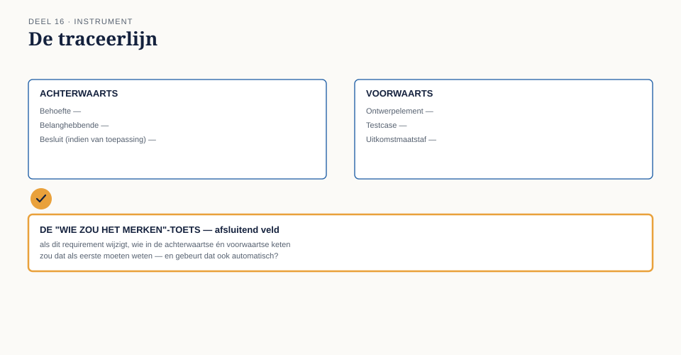

Deel 16 — Traceren en onderhouden: de traceerketen als product
Slidedeck · Ductus-cursus Business-analyse · niveau 2 · deel 16 van 30 · 22 slides
Slide 1 — Titel
Business-analyse — deel 16 Traceren en onderhouden: de traceerketen als product
Slide 2 — Terugblik
Deel 15: Karins zorg moet terugkomen in een later document — niet alleen als belofte.
Vandaag: hoe zorg je dat iets vastgelegds niet zoekraakt?
Slide 3 — Het spoor dat Femke kwijtraakte
“Ik heb echt niets veranderd aan die eis,” zegt Sander.
“Nee, maar ik heb iets veranderd aan het koppelvlak — en jouw requirement ging daarvan uit.”
“Stond dat ergens vastgelegd?”
Stilte.
Slide 4 — Geen fout van Sander of Femke
Beiden deden hun eigen werk zorgvuldig.
De verbinding tussen hun werk was nergens zichtbaar.
Slide 5 — Waar we het over gaan hebben
- Traceerbaarheid: achterwaarts en voorwaarts
- Wanneer een schakel ontbreekt of overbodig is
- De traceerlijn
Slide 6 — Traceerbaarheid als product
Geen documentatie-oefening achteraf.
Een product: gebruikers, kwaliteitsstandaard, een eigenaar voor onderhoud.
Slide 7 — Een foto is geen product
Correct op het moment van maken. Steeds minder waard naarmate de werkelijkheid verandert.
Slide 8 — Achterwaarts
Waar komt dit vandaan?
Welke behoefte, welke belanghebbende, welk besluit?
Slide 9 — Voorwaarts
Waar leidt dit naartoe?
Welk ontwerp, welke test, welke uitkomstmaatstaf?
Slide 10 —

Een requirement — achterwaartse en voorwaartse pijlen
Slide 11 — Sanders gemiste schakel
Zijn requirement had moeten verwijzen naar een aanname over het koppelvlak.
Die aanname had een voorwaartse koppeling naar Femke nodig.
Slide 12 — [Opdracht 1]
Drie requirements. Welke is het kwetsbaarst voor Femkes wijziging — en welke schakel ontbrak?
Slide 13 — Niet alles even zwaar traceren
Te weinig: het risico van dit deel. Te veel: een keten zo zwaar dat niemand haar onderhoudt.
Slide 14 — De vuistregel
Trace expliciet bij een aanname, een externe ontwerpkeuze, of een besluit dat nog kan wijzigen.
Trace licht bij iets dat volledig op zichzelf staat.
Slide 15 — Een schakel kan ook overbodig worden
Onderhoud betekent ook: actief opruimen, niet alleen toevoegen.
Slide 16 — [Opdracht 2]
“Geraakte partijen: geen bekend.”
Correct — of correct in een te enge zin?
Slide 17 — De werkvorm van dit deel
De traceerlijn
Eén requirement. Achterwaarts en voorwaarts. Een eigenaar.
Slide 18 — Het blad
Requirement · Achterwaarts · Voorwaarts Afhankelijkheden buiten de keten · Eigenaar · Laatste controle
Slide 19 — Het veld dat het verschil maakt
Als dit requirement morgen verdween, wie zou dat merken, en waaraan?
Slide 20 — Een eerlijk antwoord, vóór het incident
“Waarschijnlijk niemand — de verbinding met het koppelvlak stond nergens.”
Dat antwoord had het probleem vooraf blootgelegd.
Slide 21 —

De traceerlijn — met de “wie zou het merken”-toets als afsluitend veld
Slide 22 — Volgende keer
Traceerbaarheid maakt zichtbaar wat van elkaar afhangt.
Deel 17: wat doe je met een wijziging, zonder de keten opnieuw te breken? Prioriteren en beoordelen.